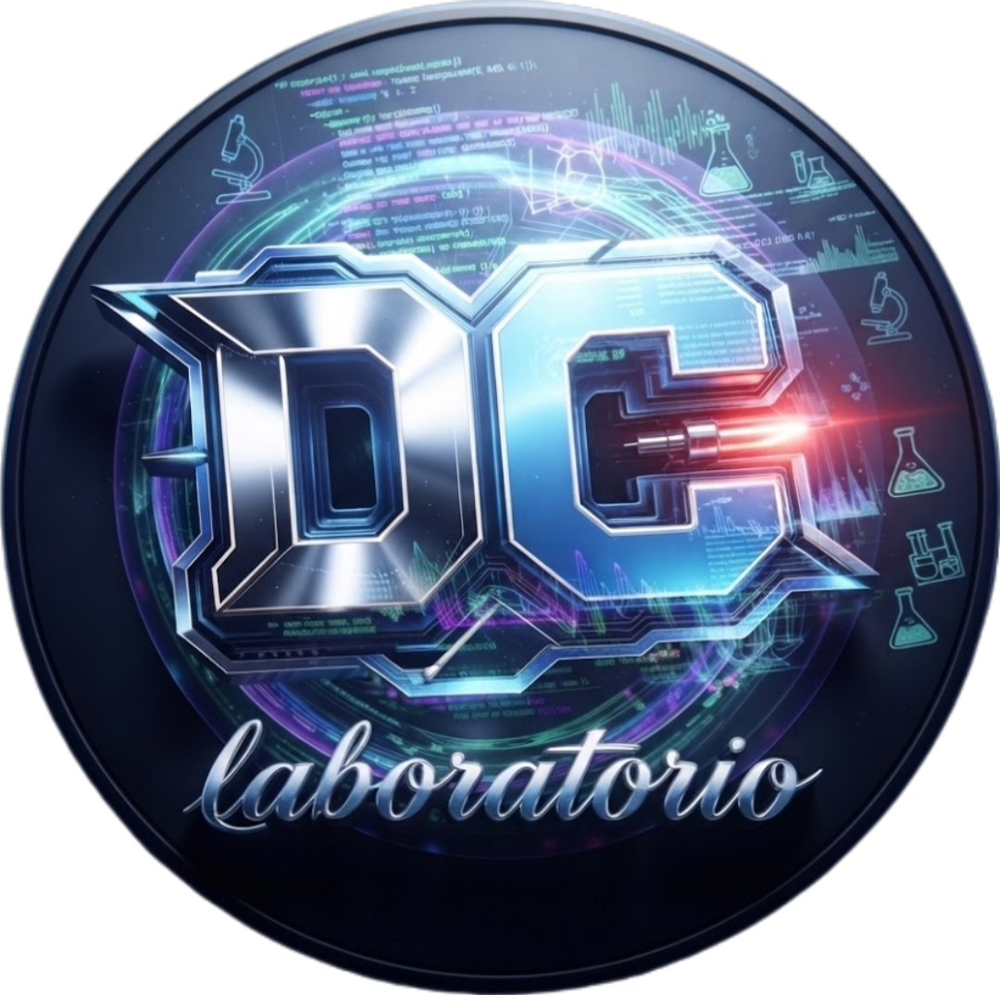
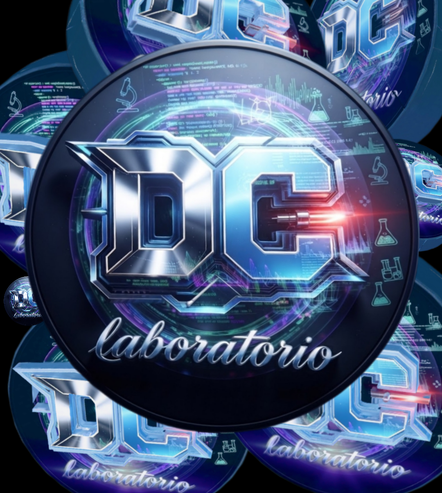

ECU TOOL · MULTIPLATAFORMA
DCtuneRstudio
Diagnóstico y sintonización automotriz para PC, Windows, Linux, macOS, Raspberry Pi y navegador.
Página y descargas del producto ↗Repositorio GitHub ↗
DClaboratoryDC LABORATORY / DIGITAL WORKSHOP
Software, telemetría, automatización e inteligencia aplicada para convertir problemas complejos en herramientas que funcionan.

Las descargas oficiales se revisan con controles de seguridad y se publican con verificación SHA-256 cuando está disponible.
BUILT IN THE LAB
Un portfolio vivo de herramientas, sistemas y experimentos que conectan software con el mundo real.
Diagnóstico y sintonización automotriz para PC, Windows, Linux, macOS, Raspberry Pi y navegador.
Página y descargas del producto ↗Repositorio GitHub ↗
Diagnóstico vehicular con datos en vivo, lectura de DTC, gráficas y conexiones Bluetooth, USB y Wi-Fi.
Abrir aplicación ↗
Tablero OBD-II con conexión ELM327, sensores, códigos DTC y monitoreo automotriz. Antes DC Tune HC / Camion V10.
Abrir proyecto ↗Repositorio GitHub ↗
Diagnóstico y sintonización automotriz con herramientas para visualizar y ajustar datos del vehículo.
Abrir página del producto ↗
Clon mejorado de TunerStudio MS, multiplataforma y sin dependencias externas.
Página y descargas ↗Linux / Debian 32 bits ↓Windows 32 bits ↓
Telemetría, ajuste ECU, sensores, gráficas y mapas para Speeduino, MegaSquirt y ELM327.
Abrir página del producto ↗
Sistema Integral de Diagnóstico y Control para análisis y soluciones en tiempo real.
Abrir página del producto ↗
Orquestación y gestión de centros de datos, despliegue y monitoreo centralizado.
Abrir proyecto ↗
Gestión de clientes, inventario, facturación y reportes para la operación diaria.
Página del producto y descargas ↗Instalar versión web PWA ↗Repositorio GitHub ↗
Monitoreo de flotillas, ubicación, velocidad, temperatura, rutas y estado de trailers.
Página del proyecto ↗Repositorio GitHub ↗
Bot de WhatsApp con IA, descargas, stickers, administración y herramientas.
Abrir proyecto ↗
Monitoreo de doble alternador en tiempo real, control automático de luces, alertas sonoras y panel web.
Página del proyecto ↗Repositorio GitHub ↗
Nube privada de consumo ultra bajo, encendida 24/7, con VPN, bloqueador de anuncios, conexión remota, almacenamiento y servicios de red.
Página del proyecto ↗

IA híbrida para organización, comunicación, soporte y soluciones online u offline.
Abrir página del producto ↗
Diseño, fabricación, reparación y monitoreo de motores VW con software dedicado.
Abrir página del taller ↗APPS / REPOSITORIES
Explora las apps y repositorios públicos de DC. Los círculos son identificadores visuales; las acciones están en los botones de cada ficha.
App de diagnóstico OBD-II, fork de AndrOBD, con datos en vivo, DTC, gráficas y conexiones Bluetooth, USB y Wi-Fi.
Tablero OBD-II con conexión ELM327; antes llamada DC Tune HC / Camion V10.
App de chat con avatar/personaje y voz en español para acompañamiento y asistencia.
Edición Android con Bluetooth SPP/BLE reforzado, sensores, DTC y dashboard.
Herramienta multiplataforma de diagnóstico y sintonización automotriz.
Software de telemetría y ajuste ECU para Speeduino, MegaSquirt y ELM327.
Sitio web del proyecto DC Tuner Studio para consulta y presentación.
Variante de DC-ELM327 con identidad nocturna y fondo OBD optimizado.
Gestión de clientes, inventario, facturación y reportes para la operación diaria.
Repositorio Android de la familia DC ECU / ELM327.
Emulador y entorno de creación de juegos del laboratorio DC.
Repositorio base de herramientas de diagnóstico OBD-II.
Monitoreo de doble alternador, luces y alertas en tiempo real.
Monitoreo de flotillas, ubicación, velocidad, temperatura y rutas.
Experiencia web de planeta, ubicación y visualización de la Tierra.
Este portal, sus proyectos, utilidades y documentación pública.
WHAT WE BUILD
Diseñamos y construimos experiencias digitales que se sienten claras, rápidas y listas para crecer.
Sitios profesionales, responsive y con identidad visual propia para presentar tu proyecto con fuerza.
Solicitar ↗Aplicaciones móviles y de escritorio a medida, optimizadas para el flujo real de tu equipo.
Solicitar ↗Control, monitoreo, automatización y sistemas industriales o automotrices diseñados contigo.
Solicitar ↗OPEN CHANNEL
¿Tienes una idea, un sistema que automatizar o un proyecto automotriz que llevar más lejos? El laboratorio está abierto.
 UBICACIÓNPROYECTO DESTACADO / PLANETAMONTERREY // NEON EARTHABRIR REPOSITORIO ↗ABRIR MI PLANETA ↗
UBICACIÓNPROYECTO DESTACADO / PLANETAMONTERREY // NEON EARTHABRIR REPOSITORIO ↗ABRIR MI PLANETA ↗